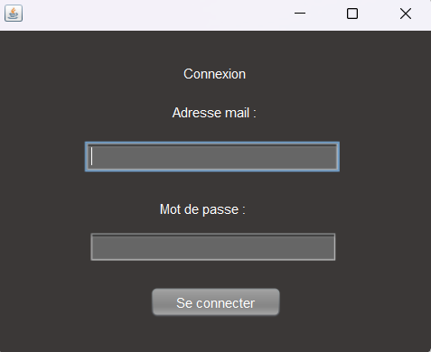

- Ce projet est directement lié au projet R3sto, un site permettant de noter différents restaurants. Chaque utilisateur peut y laisser un commentaire. Pour garantir un espace sûr et respectueux, j’ai développé une application de modération afin de gérer les avis, avec plusieurs fonctionnalités spécifiques selon le rôle de l’utilisateur. Sur cette application, on peut se connecter soit en tant que modérateur, soit en tant que responsable. Le modérateur peut masquer des avis ainsi que la raison, et le responsable peut supprimer définitivement l'avis, le démasquer ou contacter les services de sécurité. L'application devait être réalisée aussi bien en back-end qu'en front-end, avec un accès distant à la base de données. L'application a ensuite été déployée sur le serveur de l'école en .jar.
-
Exploiter des référentiels, normes et standards adoptés par le prestataire informatique :
En développement, il est important de garder de bonnes pratiques et de respecter certaines normes pour avoir une organisation simple et claire, apporter plus de portabilité à un projet et permettre facilement le travail en équipe. Par exemple, ce projet-ci devait respecter des règles de nommage, une documentation de code, etc. On peut observer ci-dessous que le code est documenté et que les variables utilisées ne sont pas nommées au hasard, mais tentent d'être explicites. On peut aussi observer que le code est bien indenté et qu'il n'y a aucune répétition de code. -
Mettre en place et vérifier les niveaux d’habilitation associés à un service :
Je gère les différents droits des utilisateurs au sein du site internet en respectant les règles de bonnes pratiques. Il est important de donner les droits minimums à chacun. Ici, l'utilisateur aura seulement le droit de masquer les différents avis et n'aura aucun autre droit. -
Gérer des sauvegardes :
Avoir à disposition un lieu permettant de garder les traces de son travail accessible à toute personne le nécessitant. La mise en place d’un système de versioning et de sauvegarde m'a permis de suivre l’évolution du projet et de prévenir toute perte de données. Pour cela, nous avons utilisé GitLab pour centraliser le code. Chaque élément est méthodiquement nommé pour plus de facilité.
Le lien du GitLab se trouve au pied de la page.
- Collecter, suivre et orienter des demandes : Cette compétence a été mise en œuvre lors du recueil des besoins utilisateurs et du suivi des ajustements à apporter sur le site.
-
Traiter des demandes concernant les applications : Nous avons pris en charge et résolu plusieurs demandes d’évolution et de correction sur les fonctionnalités existantes du site.
Pour les deux compétences ci-dessus, nous avons répondu à un cahier des charges complet. L'intérêt de ce projet a été de découvrir ce qu’étaient réellement des demandes utilisateurs, en respectant une durée maximale (deadline), poussant ainsi à une meilleure organisation des différentes tâches.
Vous pouvez retrouver le cahier des charges auquel j'ai participé pendant le projet.
-
Participer à la valorisation de l’image de l’organisation sur les médias numériques en tenant compte du cadre juridique et des enjeux économiques :
Respecter l'identité numérique d'une entreprise ainsi que son budget pour améliorer son expansion dans le milieu digital et avoir une plus grande visibilité, tout en vérifiant que les lois soient respectées. Ici, j'améliore le site internet de l'organisation. Vis-à-vis des utilisateurs, nous ne demandons que les données obligatoires au bon fonctionnement du site internet afin de respecter le RGPD. - Planifier les activités : Mettre en œuvre une organisation du projet. L’utilisation des fonctionnalités de planification sur GitLab nous a permis de répartir les tâches au sein de l’équipe et d’anticiper les différentes étapes du projet. Nous avons également fonctionné avec une philosophie Agile en utilisant la méthode Scrum durant le projet. Nous faisions une réunion de début de séance ainsi que de fin de séance, avec un petit compte rendu écrit à chaque fois. Vous pouvez trouver le lien du drive avec le récapitulatif des daily scrum au pied de la page.
- Évaluer les indicateurs de suivi d’un projet et analyser les écarts : Mettre en œuvre des indicateurs permettant de connaître notre avancée sur le projet, notre retard et pouvoir se réadapter à la situation en reconsidérant nos priorités. GitLab a également servi à suivre l’avancement de chaque tâche. Nous avons ainsi pu ajuster notre planification selon les écarts constatés entre les prévisions et la réalité. Ici, chaque tâche avait une lettre associée à son niveau de priorité.
- Déployer un service : Mettre à disposition du public cible l'accès à l'application sans nécessiter d’intervention supplémentaire. Permettre un téléchargement facile et en ligne pour le public. Pour cela, j'ai utilisé le serveur désigné par l'école pour y mettre le site grâce au logiciel FileZilla. Le fichier est en .jar et ne demande qu'à être lancé après téléchargement.
Compétences acquises :